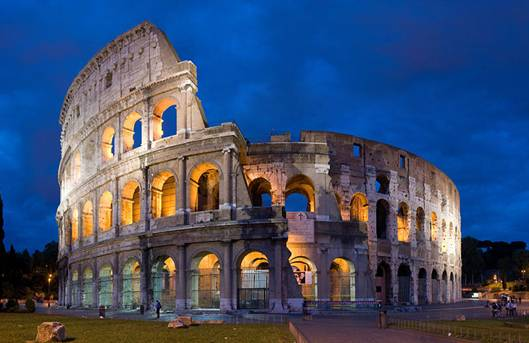
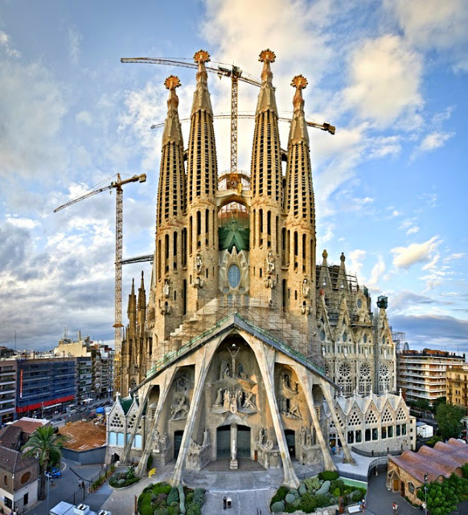

Torre Eiffel

Paris, França
A Torre Eiffel é um dos ícones mais reconhecíveis do mundo, situado no coração de Paris, França. Projetada pelo engenheiro Gustave Eiffel, a torre foi construída como uma estrutura temporária para a Exposição Universal de 1889, mas sua notável aparência e função a transformaram em um símbolo duradouro da cidade e um marco da engenharia. Com uma altura impressionante de aproximadamente 324 metros, a Torre Eiffel já foi a estrutura mais alta do mundo. Composta por treliças de ferro interconectadas, a torre oferece vistas panorâmicas deslumbrantes de Paris a partir de seus diferentes níveis de observação. Seu design único, elegante e intricado, juntamente com sua importância histórica, atrai milhões de visitantes todos os anos.
Coliseu
Roma, Itália
O Coliseu, também conhecido como Anfiteatro Flaviano, é um monumento icônico da Roma Antiga, localizado no centro de Roma, Itália. Construído no século I d.C., o Coliseu é um impressionante anfiteatro de pedra que era usado para eventos públicos, como espetáculos gladiatórios, batalhas de animais selvagens e encenações teatrais. Com sua estrutura elaborada e engenharia avançada para a época, o Coliseu podia acomodar de 50.000 a 80.000 espectadores. Sua arquitetura única, com arcadas e colunas, bem como suas histórias de bravura e entretenimento, tornaram-no um ícone duradouro da cultura romana e um dos locais históricos mais visitados do mundo.
Igreja Sagrada Família
Barcelona, Espanha
A Basílica da Sagrada Família, ou Igreja da Sagrada Família, é uma obra-prima arquitetônica situada em Barcelona, Espanha. Projetada pelo renomado arquiteto Antoni Gaudí, a igreja é uma representação marcante do estilo arquitetônico conhecido como Modernismo Catalão, caracterizado por formas orgânicas, detalhes ornamentados e uma integração harmoniosa com a natureza. A construção da Sagrada Família começou em 1882 e ainda está em andamento até hoje, tornando-a uma das igrejas mais emblemáticas e reconhecíveis do mundo. Suas fachadas intrincadas, torres espiraladas e uma rica simbologia religiosa incorporada em cada detalhe tornam a igreja uma atração única e fascinante para os visitantes..